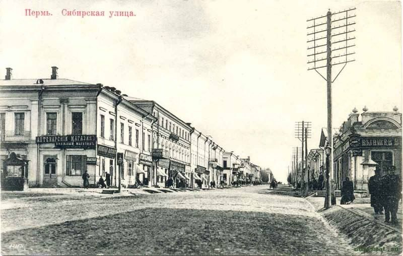

8. Историческая Сибирская улица
Участок Сибирской улицы от Монастырской до Екатерининской · Найти на Яндекс Картах

История места
Сибирская улица была одной из ключевых улиц старой Перми. Она спускалась к торговым рядам и причалам и связывала городскую жизнь с направлением Сибирского тракта.
После большого пожара 1842 года её значение усилилось: сюда переместились торговый и административный центры. Прогулка по улице показывает, как городская структура менялась после основания Перми.
Значение для Перми и России
Улица помогает проследить связь торговых путей, застройки и повседневной жизни. Она сохраняет память о формировании губернского города и его связях с Уралом и Сибирью.